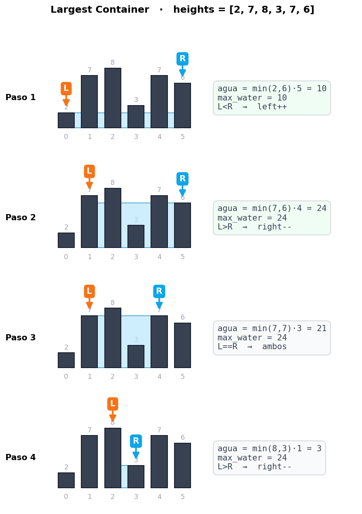
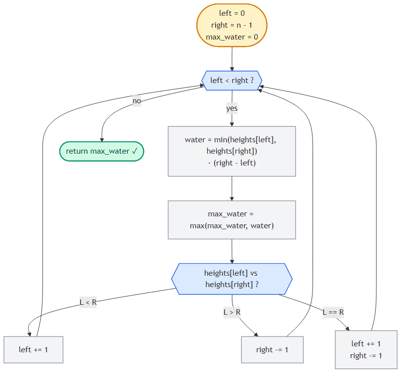

Largest Container
📍 Two Pointers · Problema 3/6 · ⬅ Triplet Sum · 🏠 Chapter · Is Palindrome Valid ➡ · 📚 KB Index
TL;DR — Dado un array donde cada valor es la altura de una columna, encontrá el par de columnas que contengan más agua (área =
min(altura) × ancho). Two pointers desde los extremos: empezás con el ancho máximo, y movés siempre el puntero de la columna más baja hacia adentro, esperando encontrar una más alta. O(n) tiempo, O(1) espacio.
📑 In this entry¶
- 🎓 For Dummies — empezá por acá
- Problema
- Cómo se calcula el agua
- Brute force O(n²) y por qué no alcanza
- La intuición clave: maximizar ancho primero
- Por qué siempre se mueve la columna más baja
- Trace paso a paso
- Decision flowchart
- Implementación
- Complexity Analysis
- Test Cases
- ⭐ Amplification: Trapping Rain Water (variante hermana)
- ⚠️ Pitfalls
- Interview Tips
🎓 For Dummies — empezá por acá¶
Analogía: imaginá una fila de paredes verticales de distintas alturas, todas paradas sobre el suelo. Querés llenar de agua el espacio entre dos paredes (cualquier par). El agua queda contenida entre las dos paredes y el suelo. Tu pregunta: ¿qué par de paredes guarda la mayor cantidad de agua?
Altura
8 | ▓
7 | ▓ ▓ ▓
6 | ▓ ▓ ▓ ▓
5 | ▓ ▓ ▓ ▓
4 | ▓ ▓ ▓ ▓
3 | ▓ ▓ ▓ ▓ ▓
2 | ▓ ▓ ▓ ▓ ▓ ▓
1 | ▓ ▓ ▓ ▓ ▓ ▓
+─────────────────
0 1 2 3 4 5 heights = [2, 7, 8, 3, 7, 6]
Dos verdades obvias:
- El agua llega a la altura de la pared más baja del par. Si una pared mide 2 y la otra 8, el agua llega a 2 — todo lo que esté arriba se rebalsa.
- La cantidad de agua es
altura × ancho, dondeanchoes la distancia entre las dos paredes.
¿Cómo encontrar el mejor par sin probar todos?
Empezá con el par más ancho posible: la primera pared y la última. Ese es tu primer candidato. Después, acercá los punteros, pero hay que elegir cuál mover:
- Si la pared izquierda es más baja → movés el puntero izquierdo hacia adentro. ¿Por qué? Porque la pared baja es la que limita el agua. Si moveras la alta, el ancho disminuye y la altura no mejora (sigue limitada por la baja).
- Si la pared derecha es más baja → movés el puntero derecho hacia adentro.
- Si ambas miden lo mismo → movés cualquiera (o las dos), porque el ancho va a bajar de todos modos y solo una pared más alta no alcanza para subir el agua.
En cada paso, calculás el área del par actual y la comparás con el máximo registrado.
Trampas comunes¶
- ⚠️ Querer mover siempre el mismo lado. No: la regla es mover el lado más bajo**, no “siempre el izquierdo” o “siempre el derecho”.
- ⚠️ Pensar que es “trapping rain water”. Son problemas distintos. Largest Container = encontrar un solo par que maximice el área. Trapping Rain Water = sumar el agua que queda en todos los huecos entre todas las columnas. Ver Amplification.
- ⚠️ No actualizar el máximo en cada iteración. Hay que comparar el área de cada par contra el máximo, antes de mover los punteros.
¿Listo para la versión completa? ⬇️
Problema¶
Te dan un array de números, cada uno representando la altura de una línea vertical en un gráfico. Un “container” se forma con cualquier par de líneas más el eje X. Devolvé la cantidad de agua que el contenedor más grande puede sostener.
Ejemplo¶
Input: heights = [2, 7, 8, 3, 7, 6]
Output: 24
El par óptimo es heights[1] = 7 y heights[4] = 7:
- altura =
min(7, 7) = 7 - ancho =
4 - 1 = 3 - agua =
7 × 3 = 21
Espera… 21, no 24. Déjenme recalcular. El par óptimo es heights[1] = 7 y heights[5] = 6:
- altura =
min(7, 6) = 6 - ancho =
5 - 1 = 4 - agua =
6 × 4 = **24**✓
Cómo se calcula el agua¶
Para dos columnas en posiciones i y j con alturas heights[i] y heights[j]:
agua = min(heights[i], heights[j]) × (j - i)
min(heights[i], heights[j]): la altura de la más baja, porque arriba de esa altura el agua se rebalsa por el lado bajo.(j - i): el ancho entre las dos columnas.
Ejemplo visual¶
Altura
4 | ▓ ░░░░░░░░░░
3 | ▓ ░░░░░░░░░░░░░░░░░░░░░░░░ ▓░░░░░░░░░
2 | ▓░░░░░░░░░░░░░░░░░░░░░░░░░░░░░░░░░░▓░░░░░░░░░
1 | ▓░░░░░░░░░░░░░░░░░░░░░░░░░░░░░░░░░░▓░░░░░░░░░
+─────────────────────────────────────────────
0 1 2 3
◄────── ancho = 2 ──────►
heights[0]=4, heights[2]=3
agua = min(4, 3) × (2 - 0) = 3 × 2 = 6
Brute force O(n²) y por qué no alcanza¶
Probás todas las parejas y te quedás con el área máxima:
function largestContainerBruteForce(heights) {
const n = heights.length;
let maxWater = 0;
for (let i = 0; i < n; i++) {
for (let j = i + 1; j < n; j++) {
const water = Math.min(heights[i], heights[j]) * (j - i);
maxWater = Math.max(maxWater, water);
}
}
return maxWater;
}
Tiempo: O(n²). Para n = 10⁵, eso es 10¹⁰ operaciones. Inviable.
La intuición clave: maximizar ancho primero¶
Queremos maximizar min(altura) × ancho. Las dos cantidades cambian de manera distinta cuando movemos punteros:
| Movimiento | Ancho | Altura |
|---|---|---|
| Mover puntero hacia adentro | disminuye siempre | puede subir o bajar |
Estrategia: empezamos con el ancho máximo posible (right - left = n - 1). Después, cada movimiento sacrifica ancho con la esperanza de ganar más altura. La pregunta es: ¿qué puntero mover para maximizar las chances de ganar altura?
Como el ancho siempre baja al movernos hacia adentro, la única forma de aumentar el área es subir la altura. Y la altura está limitada por la columna más baja.
Por qué siempre se mueve la columna más baja¶
Supongamos heights[left] < heights[right]. La altura del agua está dictada por heights[left]. Tenemos dos opciones:
Opción A — mover left++: la nueva heights[left] puede ser mayor que la anterior, igual, o menor. Existe la posibilidad de subir la altura del agua si encontramos algo más alto. ✓
Opción B — mover right--: la altura sigue limitada por heights[left] (que no cambió). Aunque la nueva heights[right] fuera enorme, el agua no sube porque depende del lado bajo. Y el ancho sí baja. Garantiza un área menor o igual. ✗
Por lo tanto: mover el puntero del lado bajo es la única jugada que puede mejorar el área. La del lado alto solo puede empeorar.
heights[left]=2 ◄ heights[right]=8
▓ ▓
▓ ▓
▓ ▓
▓ ▓
▓ ▓
▓ ▓
▓░░░░░░░░░░░░░░░░░░░░░░░░░░░░░░▓
▲ ▲
left right
agua actual = min(2, 8) × (5) = 10
Si muevo left → la altura puede subir si la próxima pared es ≥ 2
Si muevo right → la altura sigue siendo 2 (limitada por left), y el ancho baja
→ área garantizadamente menor
¿Y si las dos son iguales?¶
Si heights[left] == heights[right], la altura está limitada por las dos. Mover una sola no sirve: aunque la nueva pared sea más alta, la otra sigue siendo el techo. La única forma de subir la altura es mover ambas (o, equivalentemente, mover una sabiendo que en la próxima iteración igual vas a tener que mover la otra). Por eficiencia, movés ambas a la vez.
Trace paso a paso¶
Ejemplo: heights = [2, 7, 8, 3, 7, 6]. Esperamos max_water = 24.

Resultado: max_water = 24 ✓
Solo 4 iteraciones para un array de 6 elementos, vs 15 comparaciones del brute force (6×5/2). El ahorro escala linealmente.
Decision flowchart¶

Implementación¶
JavaScript¶
function largestContainer(heights) {
let maxWater = 0;
let left = 0, right = heights.length - 1;
while (left < right) {
// Calcular agua con el par actual.
const water = Math.min(heights[left], heights[right]) * (right - left);
maxWater = Math.max(maxWater, water);
// Mover el puntero del lado más bajo (o ambos si están empatados).
if (heights[left] < heights[right]) {
left++;
} else if (heights[left] > heights[right]) {
right--;
} else {
left++;
right--;
}
}
return maxWater;
}
C¶
public int LargestContainer(int[] heights) {
int maxWater = 0;
int left = 0, right = heights.Length - 1;
while (left < right) {
// Calcular agua con el par actual.
int water = Math.Min(heights[left], heights[right]) * (right - left);
maxWater = Math.Max(maxWater, water);
// Mover el puntero del lado más bajo (o ambos si están empatados).
if (heights[left] < heights[right]) {
left++;
} else if (heights[left] > heights[right]) {
right--;
} else {
left++;
right--;
}
}
return maxWater;
}
Variante de código: podés simplificar la triple decisión a siempre mover el más bajo y, si empatan, mover cualquiera. Es equivalente porque cuando empatan, el siguiente paso de todos modos va a comparar y mover. Pero el código de arriba es más explícito sobre la lógica.
Complexity Analysis¶
| Métrica | Valor | Por qué |
|---|---|---|
| Tiempo | O(n) | Cada iteración mueve left++, right--, o ambos. Como nunca retroceden, el total de movimientos es ≤ n. |
| Espacio | O(1) | Solo max_water, left, right, water. No depende de n. |
Demostración informal de correctness¶
Cuando movemos el puntero del lado bajo (digamos left), descartamos todos los pares (left, j) con j entre left+1 y right. ¿Por qué es seguro?
- Para cualquier
jentreleft+1yright, el ancho(j - left)es menor que(right - left). - La altura sigue limitada por
heights[left](que es la más baja del par actual) o por algo más bajo todavía siheights[j] < heights[left]. - En cualquier caso,
min × ancho < min × (right - left) = wateractual.
Por lo tanto, mover left no descarta una solución mejor. Lo mismo con right. Como cada iteración descarta un puntero (y todas sus combinaciones con ese índice), el algoritmo es correcto.
Test Cases¶
| Input | Expected | Descripción |
|---|---|---|
[] |
0 | Array vacío. |
[1] |
0 | Un solo elemento — no se puede formar contenedor. |
[0, 1, 0] |
0 | Sin contenedores que sostengan agua (la columna del medio “tapa”). |
[3, 3, 3, 3] |
9 | Todas iguales: 3 × 3 = 9 (de índice 0 a 3). |
[1, 2, 3] |
2 | Estrictamente creciente. Mejor par: (0, 2) → min(1, 3) × 2 = 2. |
[3, 2, 1] |
2 | Estrictamente decreciente. Mejor: (0, 2) → min(3, 1) × 2 = 2. |
[2, 7, 8, 3, 7, 6] |
24 | Caso del enunciado. |
[1, 8, 6, 2, 5, 4, 8, 3, 7] |
49 | Caso clásico de LeetCode #11 (par (1, 8) → min(8, 7) × 7 = 49). |
[1, 1] |
1 | Mínimo válido: min(1,1) × 1 = 1. |
⭐ Amplification: Trapping Rain Water (variante hermana)¶
Frecuentemente confundido con Largest Container, pero es otro problema.
Diferencia conceptual¶
| Largest Container | Trapping Rain Water | |
|---|---|---|
| Pregunta | ¿Cuál es el par único que sostiene más agua? | ¿Cuánta agua total queda atrapada entre todas las columnas? |
| Salida | un solo número (el área máxima) | un solo número (suma de toda el agua atrapada) |
| Modelo | el agua llena el espacio entre dos paredes | el agua queda atrapada encima de cada columna, limitada por las paredes más altas a su izquierda y derecha |
| LeetCode | #11 | #42 |
Trapping Rain Water — solución con two pointers¶
Para cada columna i, el agua que queda encima es:
agua[i] = min(max_left[i], max_right[i]) - heights[i]
donde max_left[i] es la altura máxima a la izquierda de i, y max_right[i] análogo a la derecha.
function trap(heights) {
if (heights.length === 0) return 0;
let left = 0, right = heights.length - 1;
let maxLeft = 0, maxRight = 0;
let water = 0;
while (left < right) {
if (heights[left] < heights[right]) {
if (heights[left] >= maxLeft) {
maxLeft = heights[left];
} else {
water += maxLeft - heights[left];
}
left++;
} else {
if (heights[right] >= maxRight) {
maxRight = heights[right];
} else {
water += maxRight - heights[right];
}
right--;
}
}
return water;
}
Tiempo: O(n). Espacio: O(1). Mismo “shape” del algoritmo (two pointers desde extremos), pero la lógica interna es distinta.
Cuándo es “container” vs “rain water”¶
- “How much water can the container hold?” → Largest Container (par único).
- “How much rain water gets trapped?” → Trapping Rain Water (suma total).
Lee el enunciado dos veces — los problemas se confunden mucho.
⚠️ Pitfalls¶
- Mover siempre el mismo puntero. La regla es mover el lado más bajo, no “siempre left” o “siempre right”.
- Olvidar
max_water = max(...). Sin esto, devolvés el agua del último par, no el máximo. - Condición de salida
left <= right. Cuandoleft == right, el ancho es 0 → agua 0. No rompe nada pero tampoco aporta. Quedate conleft < right. - Confundir con Trapping Rain Water. Algoritmos parecidos, problemas distintos. (Ver Amplification.)
- No considerar arrays con 0 o 1 elemento. Devolver 0 directamente sin entrar al while está cubierto naturalmente por la condición.
- Pensar que el óptimo siempre involucra la columna más alta. Falso. En
[1, 100, 1, 1, 1, 100, 1]el óptimo no involucra los 100s solos, sino el par(1, 5)con altura limitada pormin(100, 100) = 100y ancho 4 → área 400.
Interview Tips¶
Tip 1 — Dibujá el histograma antes de codear. Es un problema visual. Tomate 30 segundos en hacer un dibujo en la pizarra/papel/Whimsical. El entrevistador ve que pensás antes de tipear.
Tip 2 — Justificá la decisión “mover el más bajo”. Decí en voz alta: “Si muevo el alto, la altura sigue limitada por el bajo y el ancho disminuye → área garantizadamente menor o igual. Si muevo el bajo, la altura puede subir.” Mostrar el razonamiento es lo que diferencia este problema.
Tip 3 — No pares en el primer match. A diferencia de pair-sum, no devolvés en cuanto encontrás un área buena: tenés que recorrer hasta que los punteros se cruzen, porque puede haber un par mejor más adentro.
Tip 4 — Si te preguntan trapping rain water como follow-up, pensalo distinto.
No es “mover el más bajo y listo”. Necesitás trackear max_left y max_right. Comentá la diferencia explícitamente.
Tip 5 — La complexity es O(n), aclaralo.
Cada iteración mueve al menos un puntero. Como left solo crece y right solo decrece y se cruzan a lo sumo una vez, total ≤ n iteraciones.
References¶
- LeetCode — #11 Container With Most Water
- LeetCode — #42 Trapping Rain Water (variante distinta)
- Coding Interview Patterns — capítulo “Two Pointers” → “Largest Container”
- Entradas relacionadas:
- Introduction to Two Pointers
- Pair Sum - Sorted
📍 Two Pointers · Problema 3/6 · ⬅ Triplet Sum · 🏠 Chapter · Is Palindrome Valid ➡ · 📚 KB Index